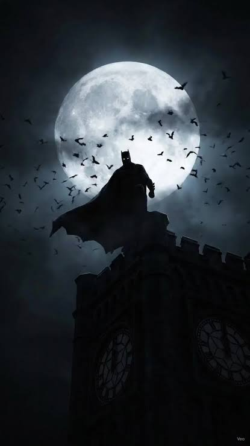
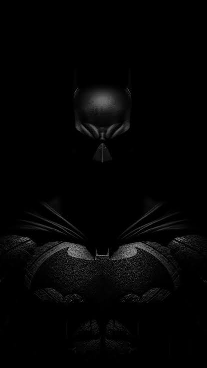
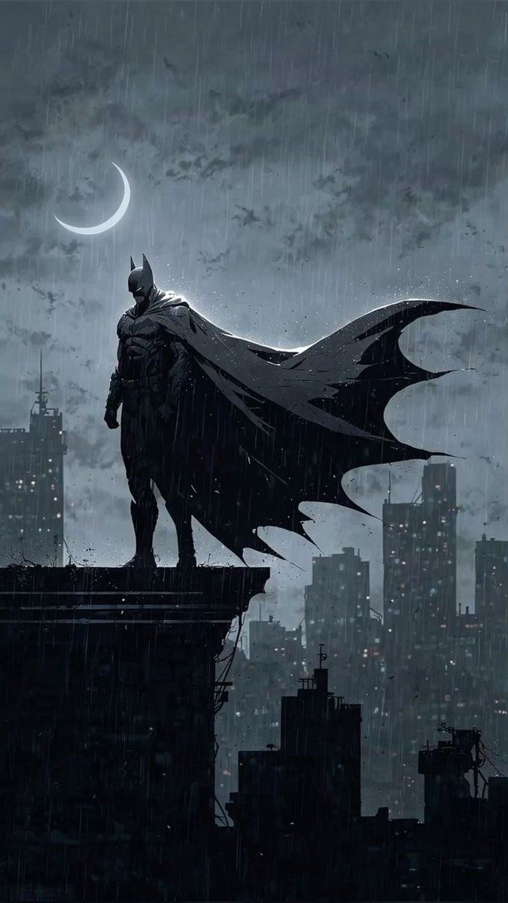

Quem deu a Bruce Wayne o direito de julgar?
À noite , ele veste a mascara e decide,sozinho, quem é culpado e quem merece punição. Ninguèm pediu isso a ele: Bruce simplismente se deu o direito de fazer jusiça com as próprias mãos.
Assinado: Coringa.